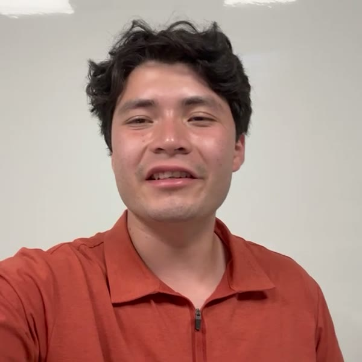
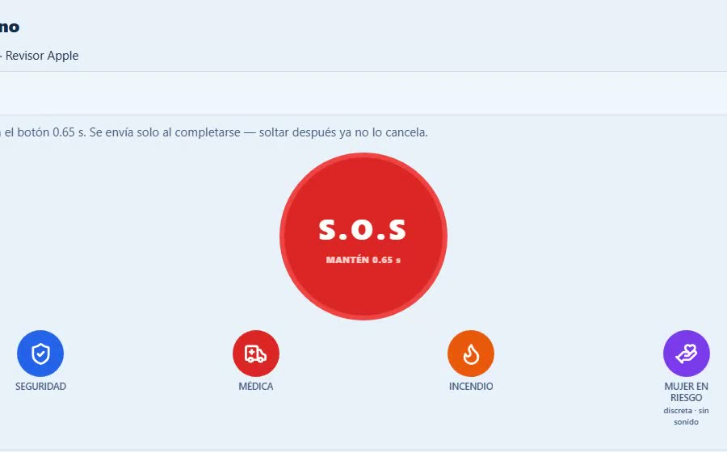
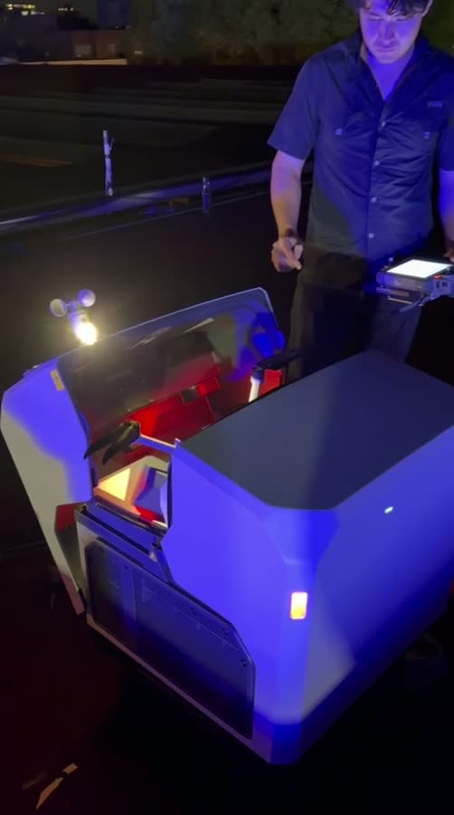
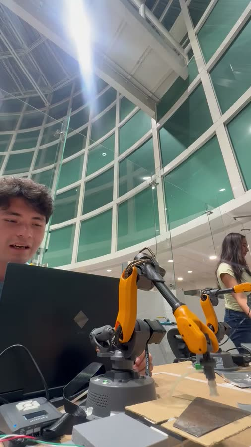
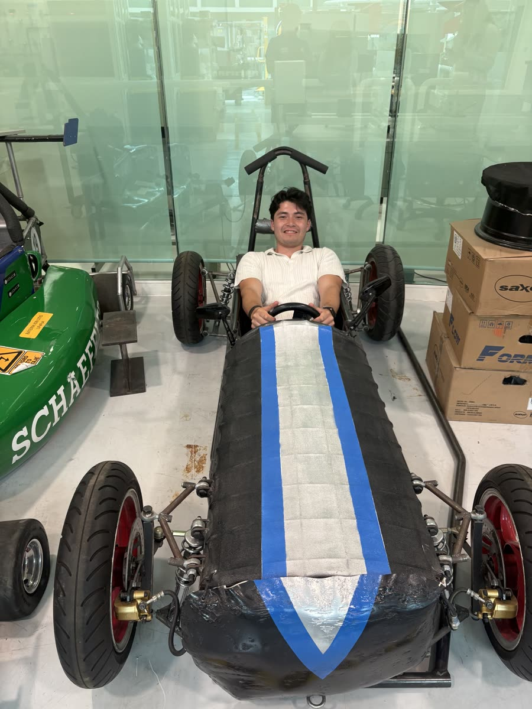
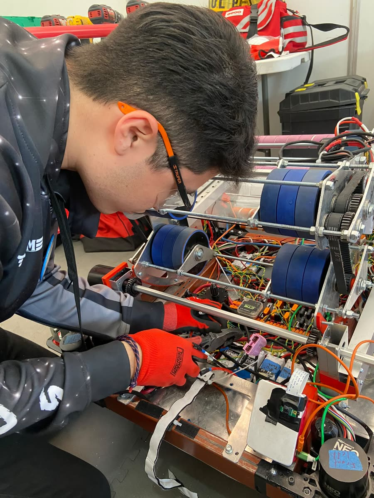

I'm a third-year Mechatronics Engineering student at Tec de Monterrey, Campus Puebla, on a full-tuition Líderes del Mañana scholarship. My average is 91.6/100 and has gone up every semester. I like building things that have to work in the real world: software for emergency response, autonomous drone stations, firmware and race cars.

A 911 computer-aided dispatch platform for Mexican municipalities: a React 19 dispatch console, two React Native (Expo) apps for citizens and responders, and a Supabase/PostgreSQL backend with row-level security, 113 migrations and 5,000+ automated checks. It includes a Gemini 2.5 Flash copilot behind a custom gateway. Theia entered a shadow pilot in Puente de Ixtla, Morelos, in September 2026. Its video gateway has been lab-tested with one camera, and its DJI Dock 2 integration is prepared in software but not yet flown.

I installed the company's first DJI Dock: the drone launches, flies its mission, records and lands with no pilot on site, and can be dispatched remotely. The company now runs two stations, including night missions.

I wrote the ESP32 firmware in C++: load-cell sampling, calibration stored in flash so it survives power loss, and a custom serial protocol. I also designed the state machine of the cell's AI-assisted Python controller and own its integration, calibration and failure analysis.

I worked on the design and build of our Gravity Race Car and designed its aluminium steering knuckle in SolidWorks, validated with FEA (SolidWorks Simulation). Since I joined, the team won the Electratón regional (2024) and the Gravity Race Car national title (2025). Next up: Baja SAE.

Team captain and FIRST Dean's List nominee, 3rd place at the Laguna Regional 2023, and robot code in Java. I also founded two robotics teams for kids from underserved communities.
MATLAB Onramp, MathWorks: course completion certificate, September 2025.
IEEE Mexican Humanitarian Technology Conference (MHTC 2025), IEEE Puebla Section: certificate of attendance, Tec de Monterrey Campus Puebla, June 2025.
Tecnológico de Monterrey, Campus Puebla: B.S. Mechatronics Engineering, 2024 – 2028 (expected June 2028). Average 91.6/100.
Universidad Tecmilenio, Cuernavaca: high school, 2021 – 2024.